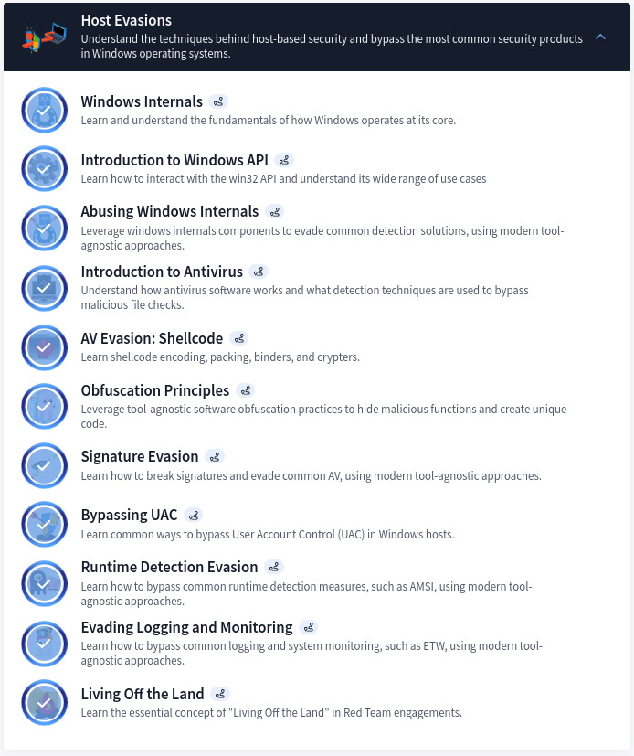

TryHackMe Red Teaming Pathway — Full Review
Table of Contents
- Introduction
- Section 1: Red Team Fundamentals
- Section 2: Initial Access
- Section 3: Post Compromise
- Section 4: Host Evasions
- Section 5: Network Security Evasion
- Section 6: Compromising Active Directory
- Key Deliverables of the CompTIA PenTest+ Pathway
- Do’s and Don’ts I would personally advice
- Conclusion
Introduction
The Red Teaming path on TryHackMe is designed to take you beyond traditional penetration testing, immersing you in the art of adversary simulation. This pathway focuses on teaching you how to mimic real-world attackers, leveraging stealth and advanced tactics to challenge the defensive capabilities of an organization. You’ll learn to navigate complex environments, bypass security controls, and maintain persistence while adhering to operational security principles.
Let’s go through the beauty of this path and its amazing content.
Section 1: Red Team Fundamentals
Introduces Red Team methodologies, OPSEC, threat intelligence, and the basics of Command and Control (C2) operations. One thing worth mentioning is the fact that Command and Control (C2) are absolutely crucial when it comes to Post Exploitation and Persistence. In fact, APT groups implement custom ones and use them on a day-to-day operations. So should any other Adversary Emulator. The attached figure indicates the modules covered in this section.
Section 2: Initial Access
Covers reconnaissance, weaponization, phishing, and password attacks to simulate gaining a foothold in target environments. It covers all the necessary steps on how to setup a stage, and prepare the environment for a successful red team engagement. The modules highlighted in this section are as such:
Section 3: Post Compromise
Teaches enumeration, privilege escalation, lateral movement, persistence, and ex-filtration techniques to navigate compromised systems. Compromising a host is one thing, however maintaining persistence is another. Therefore, this have been one of my favorite part of this path and the modules covered are as shown in the below figure:
Section 4: Host Evasions
Focuses on bypassing antivirus, obfuscation, logging evasion, and using Living Off the Land tactics for stealth. This is arguably the most extensive section of it all as it emphasis a wide range of evasion techniques that can be utilized for successful red team engagement. Check the attached figure to get a glimpse of what the section has to offer.

Note: This is covered in depth on THB Introduction to Windows Evasion Techniques. Check the link
Section 5: Network Security Evasion
Explores methods to bypass firewalls, intrusion detection systems, and sandboxes for network-level persistence. Moreover, It also highlights the use of next generation detection/prevention tools.
Section 6: Compromising Active Directory
Guides on AD enumeration, credential harvesting, lateral movement, privilege escalation, and maintaining persistence in enterprise networks. Honestly, I will stretch this once again, there is a lot more to learn on Active Directory and this is just the tip of the iceberg. Checkout sites such as HTB, AlteredSecurity, Vulnlab, TCM Security, etc for more insights, practices, tools and techniques on AD attacks and exploitation. The topics covered are same as the ones from CompTIA Pentest+:
Note: The above might seems like a lot but there is more to it.
Key Deliverables

- Understanding Red Team Engagements.
- Gain knowledge about Red Team methodologies, threat intelligence collection, and operational security (OPSEC) principles, which are critical for executing stealthy and impactful engagements.
- Initial Access Techniques.
- Master reconnaissance, weaponization, phishing tactics, and password attacks to simulate real-world attack scenarios aimed at gaining a foothold in target environments.
- Post-Compromise Skills.
- Throughout this path you will learn how to navigate compromised systems through enumeration, privilege escalation, lateral movement, persistence, and data ex-filtration.
- Evasion Techniques (Host and Network).
- Develop proficiency in evading endpoint defenses like antivirus solutions, runtime detection, and logging/monitoring mechanisms. Techniques include shell-code obfuscation, signature evasion, and using Living Off the Land Binaries (LOLBins).
- Additionally, the path also covers Network Evasion techniques as mentioned above which also taught me significant skills. In fact, it enhanced my understanding of how to bypass network security solutions like firewalls and sandboxes, ensuring stealthy lateral movement across networks.
- Active Directory Exploitation.
- As mentioned in my previous blog, you will build expertise in Active Directory compromise, covering enumeration, credential harvesting, lateral movement, and maintaining persistence in enterprise environments.
The Do’s and Don’ts: Tips for Aspiring Cybersecurity Professionals
✅ Dos
- Focus on fundamentals Besides all the other foundations mentioned, mastering Windows internals, Active Directory, and network security help to strengthen core Red Teaming skills. I can’t stretch this enough, THM is definitely one of the most beginner friendly platform out there and well design to gain solid foundations on any CyberSec topic.
- Practice OPSEC Always prioritize stealth and avoid detection by defenders to mimic real-world attacker behavior. This can be done via different techniques from using regular port/protocol to tunneling between authorized and blocked port number on a web server.
- Document Engagements Maintain detailed notes on tactics, tools, and outcomes to refine techniques and develop comprehensive reports. Feel free to use any software at your convenience. I use Obsidian btw.
- Test with Tools Use tools like Cobalt Strike, Covenant, or custom C2 frameworks to simulate realistic engagements. In fact, Silver C2 is covered in the path as shown above in Section 1. Moreover, Empire C2 is also available for free on THM itself there you may practice the use of C2 framework. Link: EmpireC2
- Adapt and Improvise It is worth noting that all techniques mentioned in the path alone might not work, sometimes you have to leverage multiple techniques, combine different approaches, or create your own exploit. As such, it’s crucial to tailor techniques to specific environments, leveraging creativity to bypass unique defenses.
❌ Don’ts
- Avoid over-reliance on tools Focus on understanding underlying principles instead of depending solely on automated tools. I must admit, I am guilty of this sometimes.
- Neglect defensive perspectives It’s imperial to know how Blue Teams operate as it will enhance your ability to design effective attack strategies.
- Skip Ethical boundaries Always adhere to legal and ethical guidelines during training or real-world engagements. In simple words always follow ROE (Role Of Engagement) and keep an eye on the NDA (Non Disclosure Agreement) as well.
- Ignore post-engagement processes Conduct thorough cleanup to ensure systems remain stable and secure after testing.
Conclusion
To sum it up, this path not only teaches technical skills but also inspires the strategic mindset necessary for professional Red Teaming, equipping you to tackle advanced offensive security challenges effectively.
View My Certificate of Completion HERE